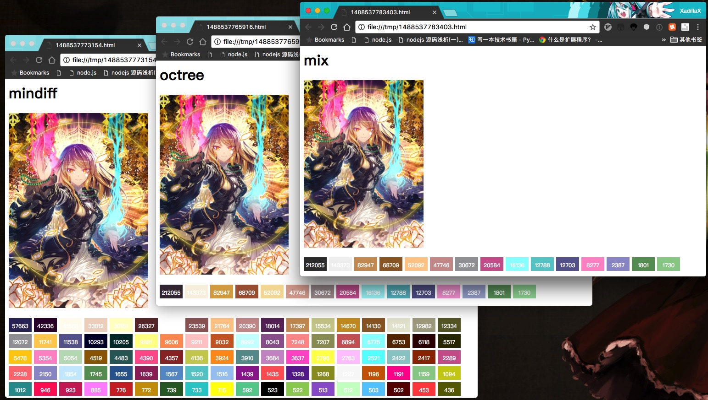

Byakuren：一个 C 实现的主题色提取库
好久没发文章了，借着 Byakuren 开源的档口炒炒冷饭吧。
先上 Repo 地址：https://github.com/XadillaX/byakuren。
主题色
图像主题色是从一张图像中提取出来最能代表这张图片主色调的多种颜色。 也就是说在一幅色彩斑斓的图片里面，各种不同颜色的数量就对应着该颜色在图 片中的比例，程序可以通过计算图片中不同颜色的像素数来算出主题色。
主题色提取算法
提取的算法在我之前的博客中有说明。在 Byakuren 中其实用的就是之前博客中讲的一些算法。
除去上面两种算法，Byakuren 还提供了将这两种算法结合起来的 Mix 算法。
Byakuren
Byakuren 是我前两年写的一个主题色提取库，也是继 thmclrx 之后的 C 版实现，个人认为代码质量比旧版的 thmclrx 要高。并且它实际上经过了企业级的验证，在某相关的公司已经欢快跑了有些年头了。
在经过相关人员的同意下，我也算把这雪藏了好久的代码给开源出来了。
伪·Byakuren 是什么？
聖 白蓮（ひじり びゃくれん，Hiziri Byakuren）是系列作品《东方 project》中的角色，首次登场于《东方星莲船》。
- 种族：魔法使
- 能力：使用魔法程度的能力（酣畅增强身体能力的）
- 危险度：不明
- 人类友好度：中
- 主要活动场所：命莲寺之类
- 命莲寺的住持。虽然原本是人类，不过由于常年的修行已经完全超越了人类。现在已经属于人们常说的魔法使了。
虽然已经入了佛门，但是不知道什么原因却被妖怪敬仰着。她从来没有像童话故事中的魔法使那样，念诵着咒语治退妖怪。使用的力量完全是邪恶的，一点都不像是圣人，虽然并没有人目击到她与人类为敌，但其实已彻底成为妖怪的同伴了。
好吧，总之本人是个东方控，所以基本上项目名都跟东方有关。
真·Byakuren 是什么？
如文章题目所说，它是一个 C 实现的开源主题色提取的库，大家可以把它编译成链接库使用。
不过目前暂时只支持 Makefile 的形式来编译，大家如果有兴趣也可以自己建个 Windows 下的 Visual Studio 项目等，也欢迎提类似于 CMake 之类的 PR。
使用
其实详细的使用方法在文档中就有说明。
不过这里还是简单介绍一下吧。
Clone
先把代码给下下来，你也可以把它 Clone 下来。总之仓库地址是：https://github.com/XadillaX/byakuren。
make
然后跑到目录下执行 make。
$ make byakuren |
你将得到一个 byakuren.a 的静态链接库。
这个时候你只要拿着这个静态链接库，然后顺便在你的项目中把头文件引进来就可以了。
API
我们假设你有 bkr_rgb* rgb 的图片像素信息，以及 uint32_t color_count 的图片像素总数两个变量，下面分别给出三个样例。具体的 API 解析还请去文档观摩。
Octree
bkr_color_stats stats[256]; |
colors就是主题色数量了，传进去的stats就会接收到主题色的具体信息了。
Min-diff
bkr_color_stats stats[256]; |
colors和stats如上所述。
Mix
bkr_color_stats stats[256]; |
colors和stats如上所述。
预览一下
可能有人想看看效果，我这里就放个效果图给大家看看吧。
其中 Octree 和 Mix 两个算法的主题色最大数量参数传的都是 16。

能做什么？
你可以拿它来写一些主题色提取的东西。
你也可以拿它来完成其它语言的主题色提取库的封装，如 Python、Lua 等等。欢迎反馈给我。
结束语
把一份自己觉得还不错的代码开源出来的感觉特爽，尤其是这种重见天日的感觉。ﾍ|･∀･|ﾉ*~●